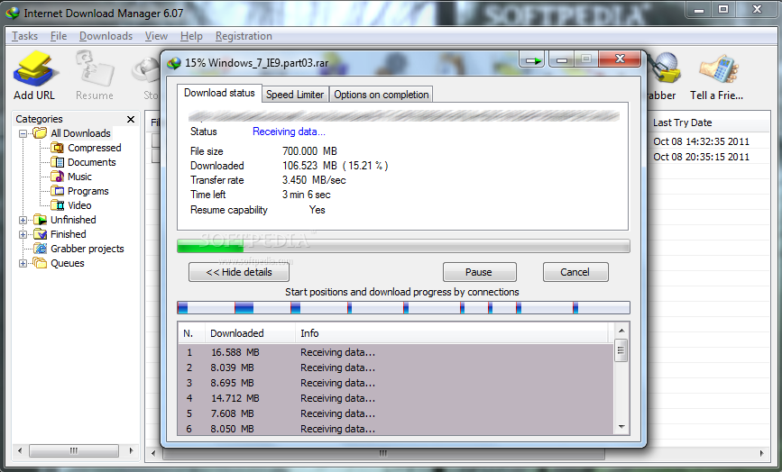

ACTIVITIES
A1-A9
A1-A9
My favorite application is Internet Download Manager (IDM). It is a desktop application, available to install in Windows where it speeds up any direct download from almost any server. What it does is that it divides the file you desire to download, into a number of parts, which you can adjust in the settings. The app then requests the file’s data on the server multiple times and is distributed on each specific part that the program divided. This then allows the download speed to multiply depending on the bandwidth of your internet connection. This is called multi- threading download, this is a feature that is the main attraction of the IDM application. This is an extremely powerful app that is useful in handling your downloads in different situations. And is very helpful in boosting the download speeds if the server of the files is slow. It also has a bunch of other features, such as enabling you to resume a download even if it fails, or sorting your files in different folders depending on the file type and plenty of other simple and complicated features. And because I like saving media files offline for later, this is an application that really boosted my efficiency.
Other applications that I am also very fond of are on android. Youtube Vanced is one of the applications that I use almost every day. Unlike the normal Youtube application, Youtube Vanced is a modded version of Youtube and it enables you to play a video on the background even when your phone is locked or you’re on different apps, this enables me to use Youtube as a music player also. And before installing in has different versions which only affects the color of the whole UI, colors such as blue, pink, black and dark. Another application would be Videoder, another media downloading application but only available in android. It is a video downloading app that lets you download for a bunch of different sites, but I mostly use it to download videos from Youtube. And it can also immediately convert the video to MP3 if you want to or download on different resolutions available for the video. And when downloading on Youtube you don’t need to switch applications, you just need to go to sharing the video and choosing Videoder, and then it overlays on the application you are using. This app also enables multi-threading download like IDM that boosts the download speed multiple times and doesn’t have a cap on how many downloads you can queue.

Our activities in our User Design class are there to make us think more about how we can implement UX in everything we create.
View
Reflection papers in our User Design class lets us review what we have learned and experienced throughout the week and enables us to absorb more of what we have encountered.
View
Quizes in our User Design class is more of a learning experience rather than a burden for our minds.
View